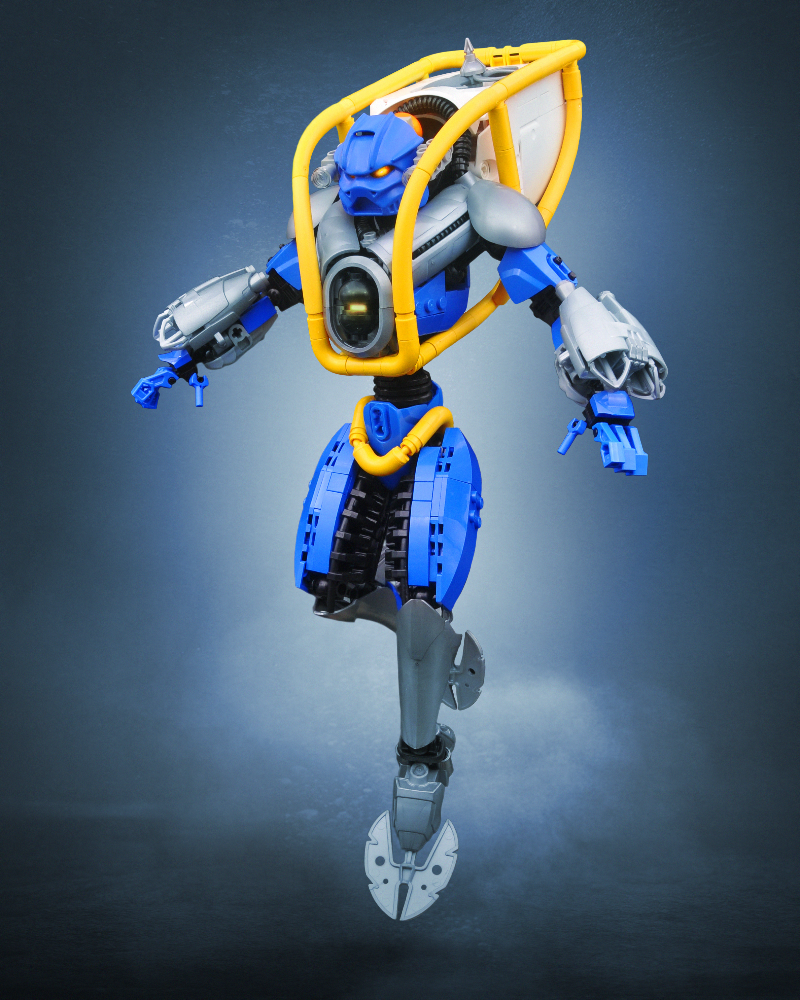
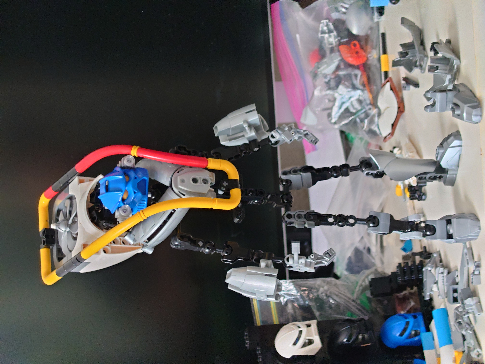
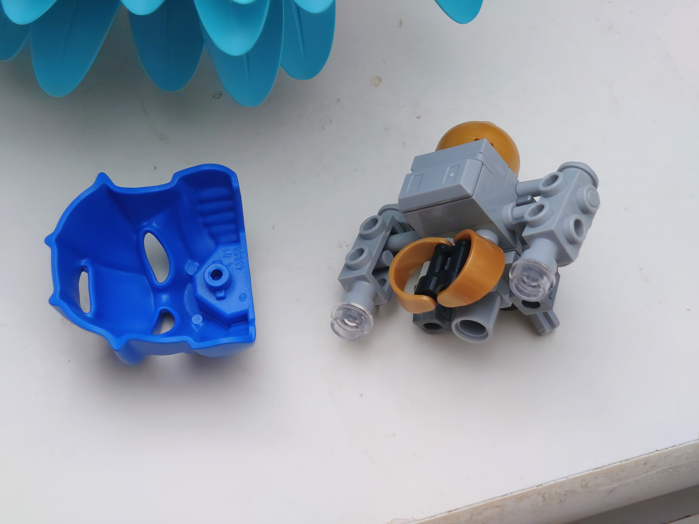
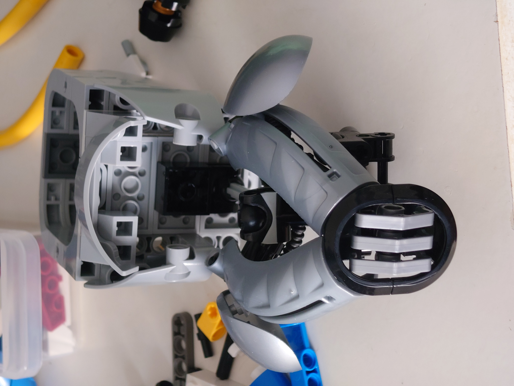
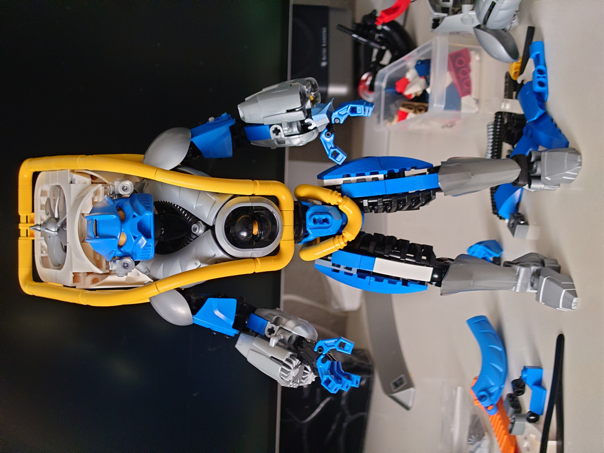
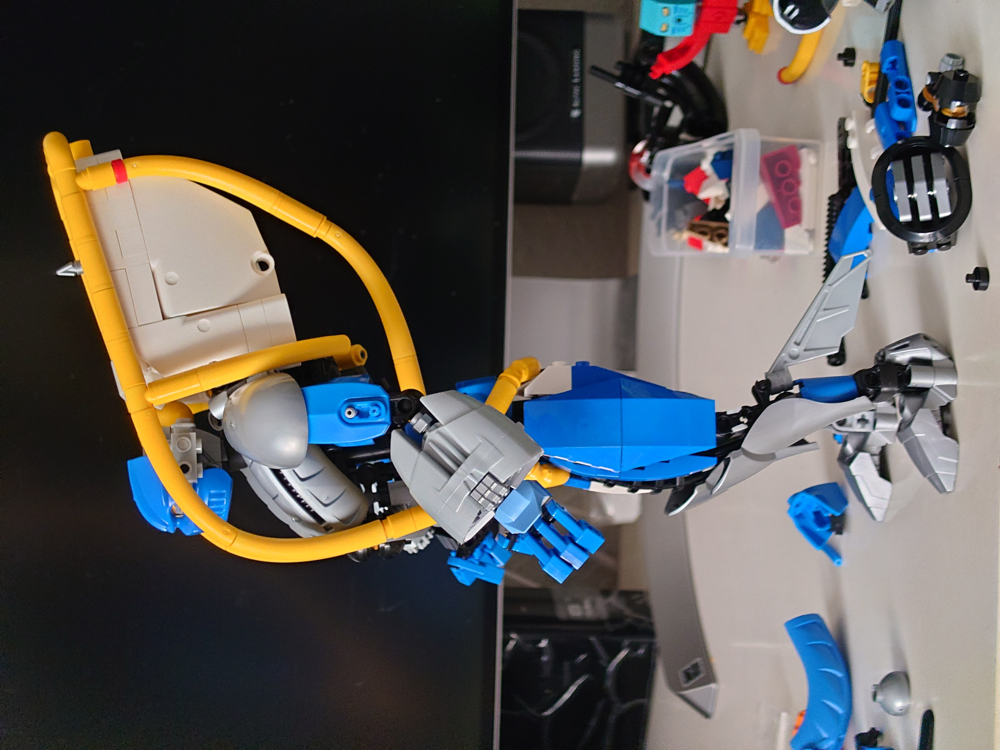
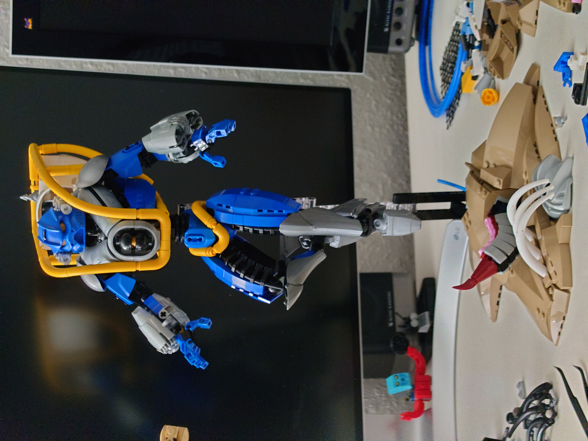

Gali Nuva
{kind=link}



Another collab. My first completed, actually, though 3rd posted. This collab went through some hurdles, to say the least.
I'll start with a shout out to Ari for doing a great job with the edits across the whole collab, wonderful stuff. This is my first Ari edit and I love it.
Very smooth build. Simple Toa at the end of the day, though the torso is anything but. Searching for a unique take on Gali Nuva, I decided looking to deep sea submersibles was a good direction with the implication that her Nuva upgrade gave her the equipment for deep sea operations. That's where the yellow frame came from, with the big propeller on the back because backpack equipment is cool. The yellow frame could then visually join the turbine pack with the rest of the torso. The high shoulder armor and head "pocket" formed between the shoulders and the turbine pack was also intended to evoke deep sea diving equipment with only the classic domed helmet missing. Basically I was looking to build a combination of the Exosuit and civilian submersibles.

As you can see, the head was a fun little puzzle that I worked on right at the very beginning of the project. I wanted to do something I hadn't done before that has become more common and chic since the last time I had built a Toa, that being a custom head behind a classic mask. So I did this, used some minifig visors for the eyes, or rather, since they fill the entire eye holes, to look like a lens over her eyes. Attached some extra headlamps on the sides to keep with the deep sea vibe, and had the golden dome on the back to represent the classic Bionicle eyestalk.

I worked with a fair few funky angles inside the torso to get the Rahkshi backs positioned as I wanted while also getting everything else, like the neck, backpack, and framing, where I wanted. Filling out the front of the Rahkshi backs with the fenders was a lucky stroke and then I knew I could do whatever I wanted in that window. Experimented with a few vent-like fillers (one shown below) before settling on the "power core" looking thing. You'll also notice the backpack was light blue-ish grey for a moment there, but I realized that was silly.

Mata torso revamp? Had to use the ol' stacked dishes (3 stud wide in this case) for the waist. Had to forgo the side pistons to accomodate the yellow frame, sadly. Pelvis was just kinda boilerplate filler to accommodate more yellow framing.
Arms came together very well with what I felt to be pretty clever assemblies for both upper arms and forearms. Forearms needed more propulsion tech, of course, because the backpack is clearly not enough, plus it's a bit of a callback to the little propellers her set had on her hands. Or maybe she has little wrist harpoons, I never really decided what exactly is going on there. Like the chest cavity, I went through a few different ideas of how to fill the jet intakes. As you see on the next couple of WIP photos, I tried turbines and the minifig skates before settling on the harpoons.
Legs were pretty standard fare, wedge slopes for the thighs and Star Wars shins for the... shins. I did like using the robot arms for more ribbed black texture on the inner thigh. You'll notice I messed up the shin proportions a little on the first try in the photo below, I had to extend them later once I noticed how wonky they were. Used the Hero 1.0 feet because I love them, they have little thrusters built into the heels, and they feel more elegant than the 2.0 feet. Eventually I got around to adding her fins because this is Gali Nuva, of course, and I didn't want to make her carry her tools (I also got a complaint about their absence in an earlier photo).
Side note: getting her to stand with the massive backpack was a bit of a challenge, but she is indeed self-supporting if I wanted to take her off the stand for some reason.


A note about colors: with five prominent colors plus two more minor colors, this was by far the most complex color scheme I've worked with but I think it worked out very readable. I've always considered my color game to be quite weak so I'm happy I made this work. Amazing what simple function-based blocking and layering can do for you.
I'm also proud of the textures mapping to the colors, specifically the ribbed texture used on all black sections. Most everything else is quite smooth with little to no textural distinction between blue, silver, and white textures, but the black I was able to keep entirely ribbed (except for the power core) with the intent that it's the flexible, rubber based bottom (visible) layer (except, again, the core). The ribbed tubing peeking through the slots in the Rahkshi backs is probably my favorite little detail.
Since I mentioned the black "rubber" base layer, that reminded me that there is a lot of aesthetic similarity between Gali and my SPACE POLICEman, who was my next build not long after finalizing Gali. Both being humanoid with the big backpack propulsion and similar color/texture layering scheme I felt like I kinda just built the same thing twice in a row.
Then I just had to finish up the base. Before moving to the technical details I'll mention it's actually loosely inspired by a scene from "Tales of the Masks" wherein Gali is stuck in an underwater cave with the Kakama Nuva mask and a hungry tentacled beasty. I had intended to have the big tentacle have a double layer of suckers on it like proper squid tentacle but it wasn't really looking good with all those seams between the slopes, nor could I get it to curl as much as I wanted to stay below Gali's feet, so I ultimately scrapped that idea and just settled for the basic dino tail tentacles you see in the final photos.

I kinda outlined the footprint of the base to be asymmetric so it would look more naturally like a bunch of sand spilling over, threw those half-buried ribs over the mask and then the rest of the base was just a matter of loosely fitting a bunch of wedges together in a way that looked natural-ish and covered the technic beams underneath. The base has gone through a few unintentional minor iterations because almost everytime I've taken her to a con the base was obviously broken apart upon arrival and I couldn't for the life of me ever figure out quite how it went back together. After that happened twice I wised up and took some pictures from the bottom and it has stayed pretty consistent since then.
Before you go, check out the rest of the collab!